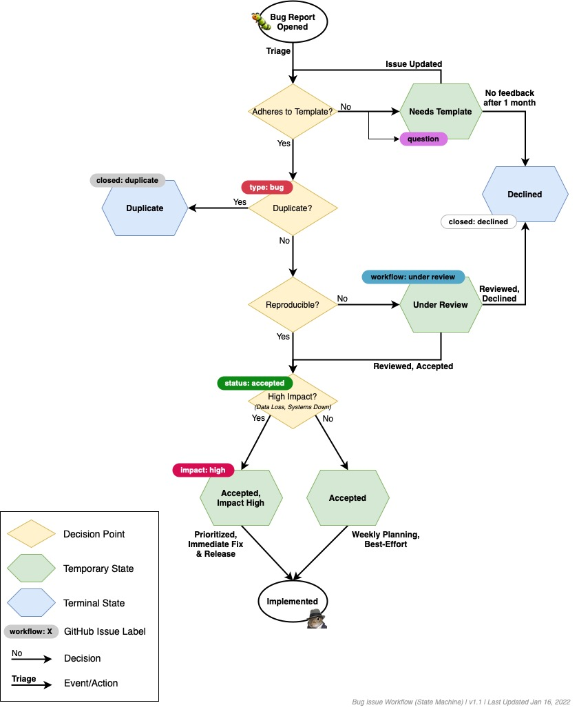
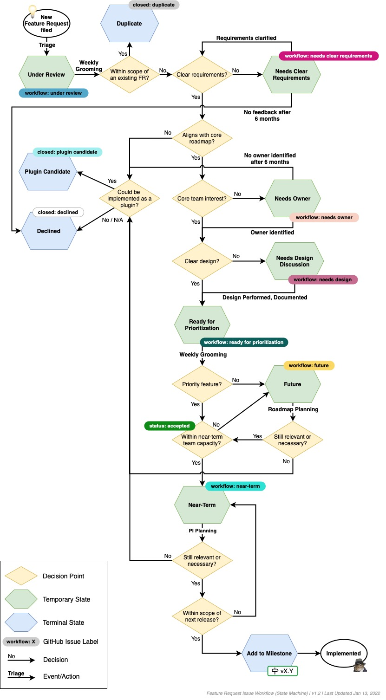

Nautobot Development¶
Nautobot is maintained as a GitHub project under the Apache 2 license. Users are encouraged to submit GitHub issues for feature requests and bug reports.
Governance¶
Nautobot is a community-based Free Open Source Software (FOSS) project sponsored by Network to Code (NTC). As a network automation solution provider, Network to Code works with its clients around the world to craft and build network automation strategies and solutions, often tightly integrated with Nautobot serving as a Source of Truth and Network Automation Platform. The direction of this project will be shaped by the community as well as by input from NTC customers; independent of where requests come from, contributors will need to follow the Contributing Guidelines.
The Nautobot Core Team is responsible for the direction and execution of the code that gets committed to the project.
Project Structure¶
Nautobot components are arranged into functional subsections called apps (a carryover from Django vernacular). Each app holds the models, views, and templates relevant to a particular function:
circuits: Communications circuits and providers (not to be confused with power circuits)dcim: Datacenter infrastructure management (sites, racks, and devices)extras: Additional features not considered part of the core data modelipam: IP address management (VRFs, prefixes, IP addresses, and VLANs)tenancy: Tenants (such as customers) to which Nautobot objects may be assignedusers: Authentication and user preferencesutilities: Resources which are not user-facing (extendable classes, etc.)virtualization: Virtual machines and clusters
Release Management¶
Roadmap¶
In order to best understand how to contribute and where to open an issue or discussion, you should understand how work moves from idea to feature and how the roadmap is structured.
There are three major "buckets" of work to be aware of within the lifecycle of getting contributions committed and released:
- Current - Work that is planned for the release currently being developed.
- Near Term - Work that is planned for one of the next two releases after the one currently being developed.
- Future - Work that needs more discussion and/or will be planned for a version three or more releases later.
The following provides more detail on these.
Current¶
- Current tickets (GitHub issues) that are being worked on for the current release or bugs that are found and will be fixed in the current release.
- Uses
currentlabel on GitHub. - The GitHub Release Milestone will track items for the current release.
Near Term¶
- Current tickets (GitHub issues) that are estimated to complete in one of the next two releases, e.g. 3-6 months to get into core, if accepted.
- GitHub discussions are used to create one or more GitHub issues when and if something moves from Future to Near Term.
- Uses
near-termlabel on GitHub.
Future¶
- Work that is for 3+ releases away or work that needs more free form discussions and brainstorming to better scope future bodies of work.
- Estimated 7+ months to get into core, if accepted.
- GitHub Discussions are used for collaborating on future work.
- If a GitHub issue is opened and is deemed that it is out of scope for Current or Near Term, it will be converted into a GitHub Discussion.
- GitHub Discussions will be closed when the topic/feature moves from Future to Near Term.
Over time, the process of moving work from Future to Near Term to Current will continue to get further refined.
Please read through the Nautobot Roadmap so you can understand the current backlog and roadmap and which items are already in Current, Near Term, and Future.
Release Schedule¶
Here is what you need to know about Nautobot releases:
- The initial launch of Nautobot is version 1.0.0beta1 (major.minor.patch) released on February 24, 2021.
- The core team estimates quarterly releases with the majority of them being minor releases.
- It is an aspirational goal that there will be no more than one major release per year as major releases do indicate a break in backwards compatibility.
- For information pertaining to patch releases, which will be released on a schedule, please see the Patch Releases section below.
- Given the core team is estimating quarterly releases, there will not be firm dates for releases.
- In order to provide more visibility into the development and release schedule of Nautobot, there will be structured notifications as follows:
- At the start of a release cycle, the estimated timeframe for release will be a 4-6 week window.
- Halfway through the release cycle (~6 weeks), the estimated timeframe for release will be narrowed to a 3-4 week window
- After 8-9 weeks within the development cycle, the estimated timeframe for release will be narrowed further to a 2 week window.
- The final notification will be provided 3-5 days before the release drops.
- The dates and notifications will occur by updating the GitHub Release Milestone and on Slack.
Patch Releases¶
Specifics around patch releases:
- Will be released every two weeks on Mondays, starting March 7th, 2022.
- Will be focused on bugs, security vulnerabilities, backports, and other issues as they arise.
- Will not introduce significant new functionality except as needed to address a bug.
- Will not be released if there have been no new merges to
developsince the previous release. - Should not be considered a mandatory upgrade: If it does not fix a bug or issue you are experiencing, you should not feel the need to upgrade right away.
- May happen a day or two after the Monday schedule if Monday is an observed holiday. We would like to ensure full team availability post-release.
Should a patch release contain a fix for security vulnerability(s) (i.e. CVE(s)), data-loss bug(s), or other critical issue(s), we will:
- Release a new patch release as soon as the fix has been identified, implemented, and thoroughly tested. No waiting for the next regularly scheduled release date.
- Bring special attention to these releases in our notification channels.
- Strongly urge you to upgrade to address these more serious issues as soon as possible.
- Not adjust any subsequent release dates (the next scheduled release will still occur as scheduled).
Long Term Support (LTS)¶
The core team is currently evaluating the possibility of publishing a Long Term Support (LTS) version of Nautobot. At this time there is no formal target for this initial release. Our goal is to collect feedback from users of Nautobot to help identify a maintainable and reliable LTS model. If you have interest in deploying an LTS version of Nautobot, or useful information to help inform the final LTS model, please contribute to the GitHub Discussion thread around LTS.
Deprecation Policy¶
The deprecation policy will be such that there will be at least one release that makes users aware of a feature that will be deprecated in the next release.
Versioning¶
Semantic Versioning (SemVer) is used for Nautobot versioning.
Communication¶
Communication among the contributors should always occur via public channels. The following outlines the best ways to communicate and engage on all things Nautobot.
Slack¶
- #nautobot on Network to Code Slack - Good for quick chats. Avoid any discussion that might need to be referenced later on, as the chat history is not retained long.
GitHub¶
- GitHub issues - All feature requests, bug reports, and other substantial changes should be documented in an issue.
- GitHub discussions - The preferred forum for general discussion and support issues. Ideal for shaping a feature request prior to submitting an issue.
GitHub's discussions are the best place to get help or propose rough ideas for new functionality. Their integration with GitHub allows for easily cross- referencing and converting posts to issues as needed. There are several categories for discussions:
- General - General community discussion.
- Ideas - Ideas for new functionality that isn't yet ready for a formal feature request. These ideas are what will be in scope to review when moving work from Future to Near Term as stated in the previous section.
- Q&A - Request help with installing or using Nautobot.
Contributing¶
We welcome many forms of contributions to Nautobot. While we understand most contributions will commonly come from developers, we encourage others to contribute in the form of docs, tutorials, and user guides. If you have other ideas for contributing, don't hesitate to open an issue or have a discussion in one of the forums above.
Please also take a chance to look at our Wiki on GitHub to review any specifics as to how we define and scope work as a community.
Reporting Bugs¶
-
First, ensure that you're running the latest stable version of Nautobot. If you're running an older version, it's possible that the bug has already been fixed.
-
Next, check the GitHub issues list to see if the bug you've found has already been reported. If you think you may be experiencing a reported issue that hasn't already been resolved, please click "add a reaction" in the top right corner of the issue and add a thumbs up (+1). You might also want to add a comment describing how it's affecting your installation. This will allow us to prioritize bugs based on how many users are affected.
-
When submitting an issue, please be as descriptive as possible. Be sure to provide all information request in the issue template, including:
- The environment in which Nautobot is running
- The exact steps that can be taken to reproduce the issue
- Expected and observed behavior
- Any error messages generated
- Screenshots (if applicable)
-
Please avoid prepending any sort of tag (e.g. "[Bug]") to the issue title. The issue will be reviewed by a maintainer after submission and the appropriate labels will be applied for categorization.
-
Keep in mind that bugs are prioritized based on their severity and how much work is required to resolve them. It may take some time for someone to address your issue.
Bugs will follow our published workflow from inbound triage to ultimate terminal state, whether accepted or closed:

Opening Feature Requests¶
-
First, check the GitHub issues list and Discussions to see if the feature you're requesting is already listed. You can greater visibility on the committed by looking at the Nautobot Roadmap (Be sure to search closed issues as well, since some feature requests have not have been accepted.) If the feature you'd like to see has already been requested and is open, click "add a reaction" in the top right corner of the issue and add a thumbs up (+1). This ensures that the issue has a better chance of receiving attention. Also feel free to add a comment with any additional justification for the feature. (However, note that comments with no substance other than a "+1" will be deleted. Please use GitHub's reactions feature to indicate your support.)
-
Before filing a new feature request, consider starting with a GitHub Discussion. Feedback you receive there will help validate and shape the proposed feature before filing a formal issue. If the feature request does not get accepted into the current or near term backlog, it will get converted to a Discussion anyway.
-
Good feature requests are very narrowly defined. Be sure to thoroughly describe the functionality and data model(s) being proposed. The more effort you put into writing a feature request, the better its chance is of being implemented. Overly broad feature requests will be closed.
-
When submitting a feature request on GitHub, be sure to include all information requested by the issue template, including:
- A detailed description of the proposed functionality
- A use case for the feature; who would use it and what value it would add to Nautobot
- A rough description of changes necessary to the database schema (if applicable)
- Any third-party libraries or other resources which would be involved
- Please avoid prepending any sort of tag (e.g. "[Feature]") to the issue title.
The issue will be reviewed by a moderator after submission and the appropriate labels will be applied for categorization.
Feature requests will follow our published workflow from inbound triage to ultimate terminal state, whether accepted or closed:

Submitting Pull Requests¶
-
If you're interested in contributing to Nautobot, be sure to check out our getting started documentation for tips on setting up your development environment.
-
It is recommended to open an issue before starting work on a pull request, and discuss your idea with the Nautobot maintainers before beginning work. This will help prevent wasting time on something that we might not be able to implement. When suggesting a new feature, also make sure it won't conflict with any work that's already in progress.
-
Once you've opened or identified an issue you'd like to work on, ask that it be assigned to you so that others are aware it's being worked on. A maintainer will then mark the issue as "accepted."
-
If you followed the project guidelines, have ample tests, code quality, you will first be acknowledged for your work. So, thank you in advance! After that, the PR will be quickly reviewed to ensure that it makes sense as a contribution to the project, and to gauge the work effort or issues with merging into current. If the effort required by the core team isn’t trivial, it’ll likely still be a few weeks before it gets thoroughly reviewed and merged, thus it won't be uncommon to move it to near term with a
near-termlabel. It will just depend on the current backlog. -
All code submissions should meet the following criteria (CI will enforce these checks):
- Python syntax is valid
- All unit tests pass successfully
- PEP 8 compliance is enforced, with the exception that lines may be greater than 80 characters in length
- At least one changelog fragment has been included in the feature branch
Creating Changelog Fragments¶
All pull requests to next or develop must include a changelog fragment file in the ./changes directory. To create a fragment, use your github issue number and fragment type as the filename. For example, 2362.added. Valid fragment types are added, changed, deprecated, fixed, removed, and security. The change summary is added to the file in plain text. Change summaries should be complete sentences, starting with a capital letter and ending with a period, and be in past tense. Each line of the change fragment will generate a single change entry in the release notes. Use multiple lines in the same file if your change needs to generate multiple release notes in the same category. If the change needs to create multiple entries in separate categories, create multiple files.
Example
Wrong
Right